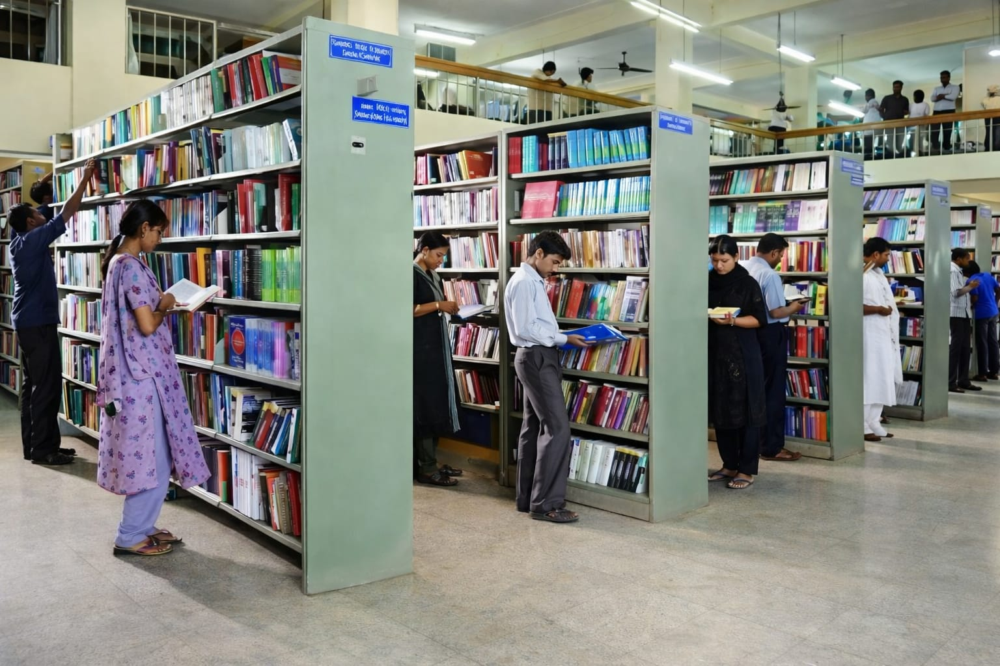
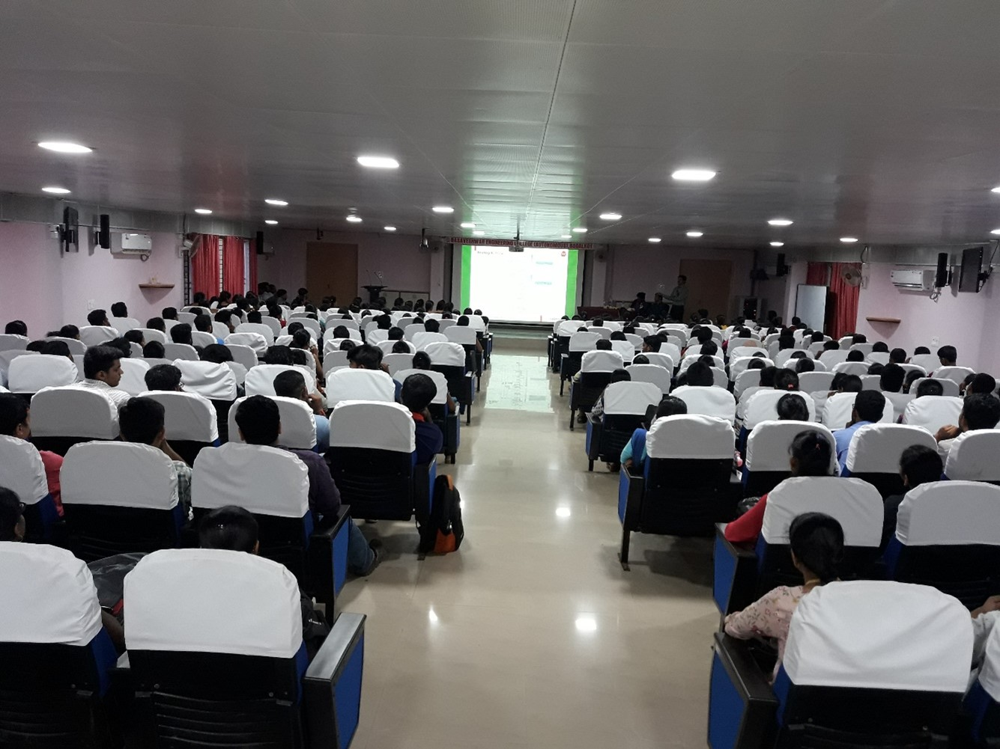
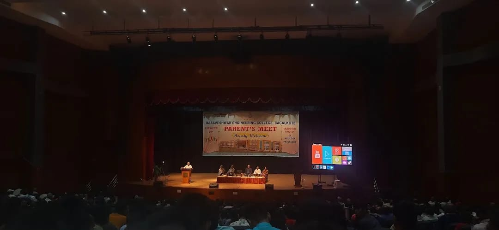
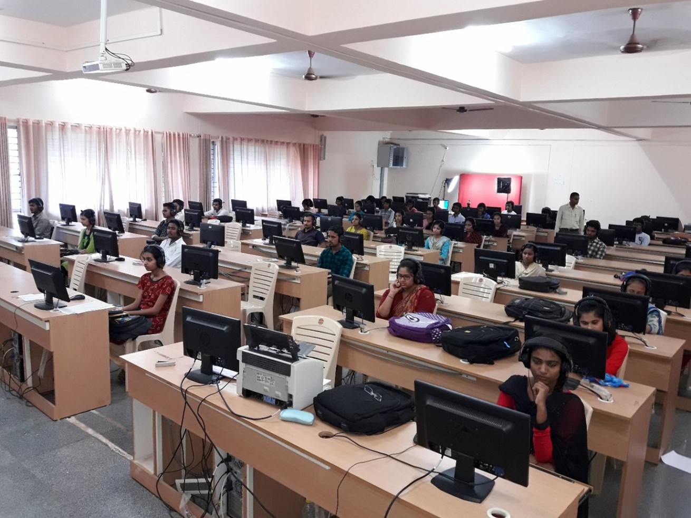
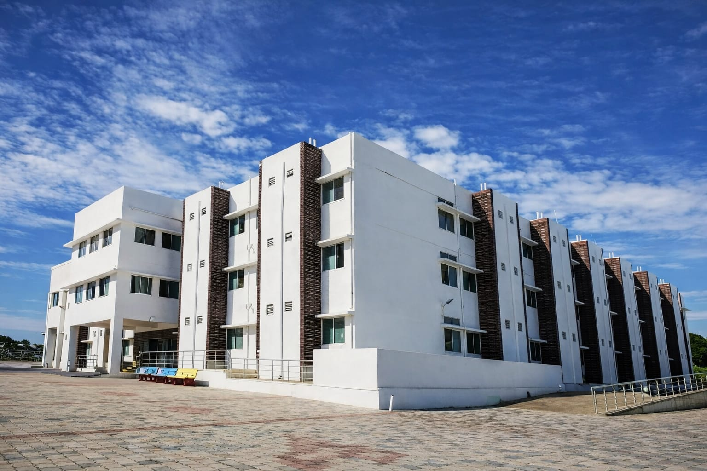
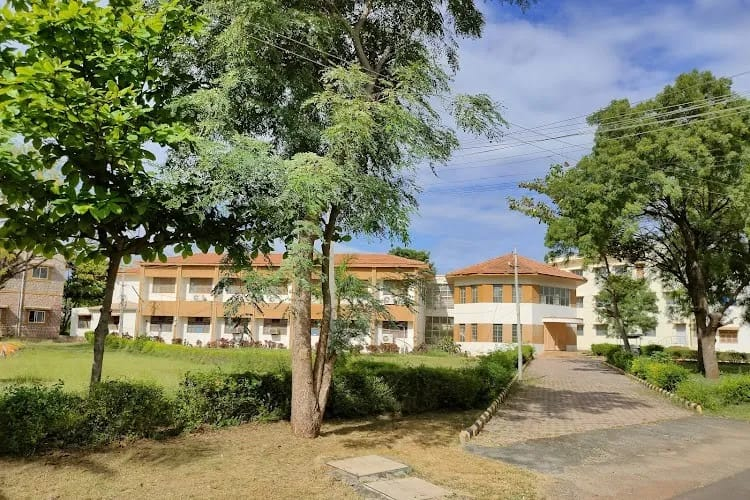

Infrastructure
Basaveshwar Engineering College is spread across a well-planned and spacious campus designed to provide an ideal environment for academic excellence, research, innovation, and overall personality development. The institution places strong emphasis on creating modern infrastructure that supports effective teaching-learning processes, advanced research activities, and holistic student growth.
The campus infrastructure reflects the college’s commitment to quality education, technological advancement, and student welfare. Every facility is developed with a long-term vision to meet the evolving needs of engineering education and industry expectations.
1. Campus Overview

The college campus is located in a serene and academically conducive environment at Navanagar, Bagalkot. The campus layout is systematically planned with separate academic blocks, administrative buildings, laboratories, hostels, sports facilities, and green spaces.
Wide internal roads, pedestrian-friendly walkways, proper lighting, and landscaped gardens ensure a safe, clean, and welcoming atmosphere for students, faculty, and visitors. The campus design encourages discipline, focus, and a sense of belonging among students.
2. Academic Blocks
The academic blocks house spacious classrooms, seminar halls, faculty rooms, departmental offices, and laboratories. Each department is provided with dedicated infrastructure to support its academic and research activities.
Classrooms are well-ventilated, adequately lit, and equipped with modern teaching aids such as smart boards, LCD projectors, and audio systems to facilitate interactive learning. The seating arrangement is designed to ensure comfort and visibility for all students.
3. Laboratories and Research Facilities
Laboratories form the backbone of engineering education, and the college has established well-equipped laboratories across all departments. These labs are designed to provide hands-on practical exposure aligned with university curriculum and industry standards.
Each laboratory is equipped with modern instruments, software tools, simulation systems, and safety equipment. Regular upgrades ensure that students gain experience with current technologies and practices.
- Computer Programming and Advanced Computing Labs
- Electronics and Communication Laboratories
- Electrical Machines and Power Systems Labs
- Mechanical and Thermal Engineering Labs
- Civil Engineering and Structural Labs
- AI, Data Science, and Emerging Technology Labs
4. Central Library
The Central Library is a major academic resource center supporting teaching, learning, and research activities. It houses a vast collection of textbooks, reference books, journals, magazines, project reports, and digital resources.
The library provides access to national and international journals, e-books, and online databases. Reading halls are spacious and designed to provide a quiet and focused learning environment.
Digital library facilities enable students and faculty to access academic resources beyond physical boundaries, encouraging independent learning and research.
5. Information Technology Infrastructure
The college has a strong IT infrastructure to support academic activities, research, and administrative operations. High-speed internet connectivity is available across the campus through wired and wireless networks.
Computer centers and departmental labs are equipped with updated systems, licensed software, and development tools. This infrastructure supports programming, simulations, design, data analysis, and research work.
6. Seminar Halls and Auditorium
The campus features well-designed seminar halls and auditoriums equipped with modern audio-visual facilities. These venues are used for academic seminars, workshops, conferences, guest lectures, cultural programs, and institutional events.
The infrastructure supports interaction with industry experts, researchers, and academicians, enriching the learning experience of students.
7. Administrative and Support Facilities
The administrative block houses the offices of the Principal, management, academic administration, examination cell, accounts section, and student services. Efficient infrastructure ensures smooth functioning of academic and administrative processes.
Student support services such as admissions, scholarships, grievance redressal, and counseling are managed through dedicated offices.
8. Hostel Facilities
Separate hostel facilities for boys and girls are provided within or near the campus. The hostels are designed to offer a safe, comfortable, and disciplined living environment conducive to academic focus.
Hostel facilities include furnished rooms, study areas, dining halls, recreational spaces, and basic medical support. Proper security measures and supervision ensure student safety.
9. Sports and Physical Education Infrastructure
The college promotes physical fitness and sportsmanship through well- maintained sports facilities. Outdoor grounds are available for games such as cricket, football, volleyball, and athletics.
Indoor sports facilities support games like badminton, table tennis, chess, and carrom. Students are encouraged to participate in inter-college and university-level sports competitions.
10. Health, Safety, and Wellness Facilities
Basic medical facilities and first-aid services are available on campus to address health emergencies. The college emphasizes safety through proper infrastructure, fire safety measures, and emergency preparedness.
Counseling and wellness initiatives support students’ mental and emotional well-being, helping them cope with academic and personal challenges.
11. Green Campus and Sustainability
The campus incorporates eco-friendly practices such as tree plantation, waste management, water conservation, and energy-efficient systems. Green spaces contribute to a healthy and pleasant learning environment.
Sustainability initiatives aim to create environmental awareness among students and promote responsible citizenship.
12. Transportation and Accessibility
Transportation facilities support easy commuting for students and staff from different parts of the city and nearby areas. The campus is well connected by public transport and accessible through major roads.
13. Future Infrastructure Development
The institution continuously invests in infrastructure development to enhance academic quality and research capabilities. Future plans include expansion of academic blocks, advanced research centers, innovation hubs, and improved student amenities.
Through continuous development and modernization, Basaveshwar Engineering College strives to provide an infrastructure that matches global standards in engineering education.